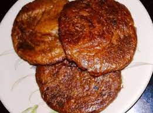

Arsa

Description
Arsa is a sweet Pahari delicacy that is prepared on special occasions like weddings and traditional celebrations. It is one of the most savoured dessert for the people in Uttaranchal. This delicious recipe is prepared with simple ingredients like cane sugar, rice and mustard oil. Arsa is an ideal snack recipe for occasions like pot luck, kitty party and you can even pack them for picnic and road trips. Prepare this mouth-watering dessert for your loved ones and treat them with this delightful and tender sweet.
Ingredients
For 8 serving
- Rice;400 gm
- Musturd oil;600ml
- jaggery;300 gm
- Water as required
Steps
- To start with,keep the rice soaked in bowl full of water for at least 4 hours.After soaking for 4 hours,drain the water and transfer the rice in muslin cloth.Tie rice in the cloth peoperly.Wait till the rice dries up.
- Take a grinder and grind rice to form a smooth powder.Take a pan,keep it on the medium flame,add water and jaggery to the pan and bring to a boil.Let thick syrup be formed
- Then combine rice with the cane sugar syrup and prepare dough. From the dough, make small balls and roll them out in the shape of doughnuts. Take a kadai, heat oil in it keeping it on medium flame and deep fry the rolls in it one by one. Wait till they turn golden brown. Transfer on a plate.
Return to main page